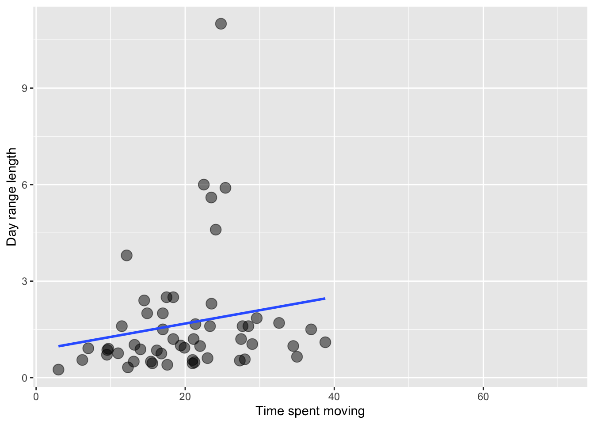
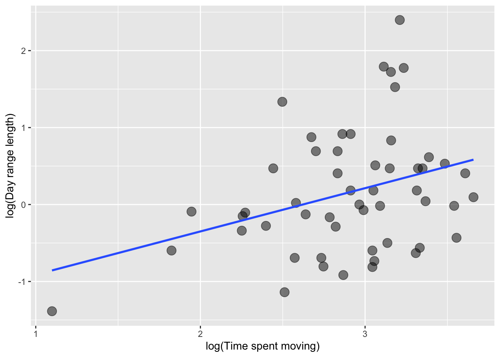
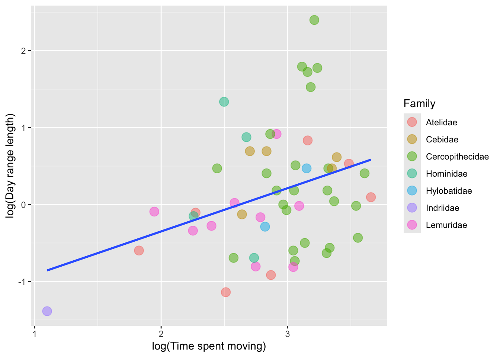
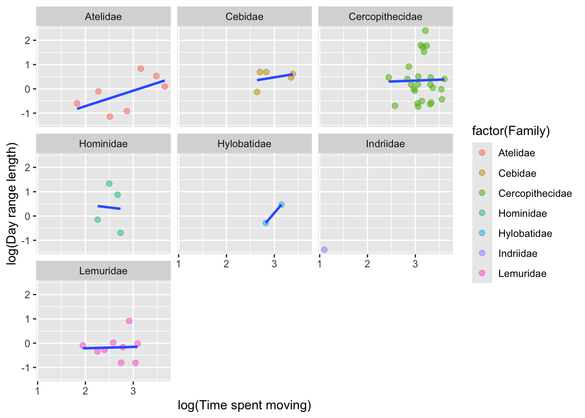
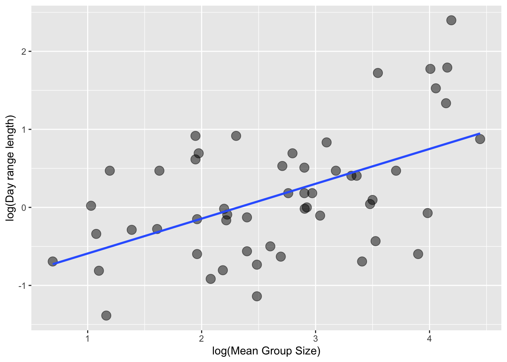
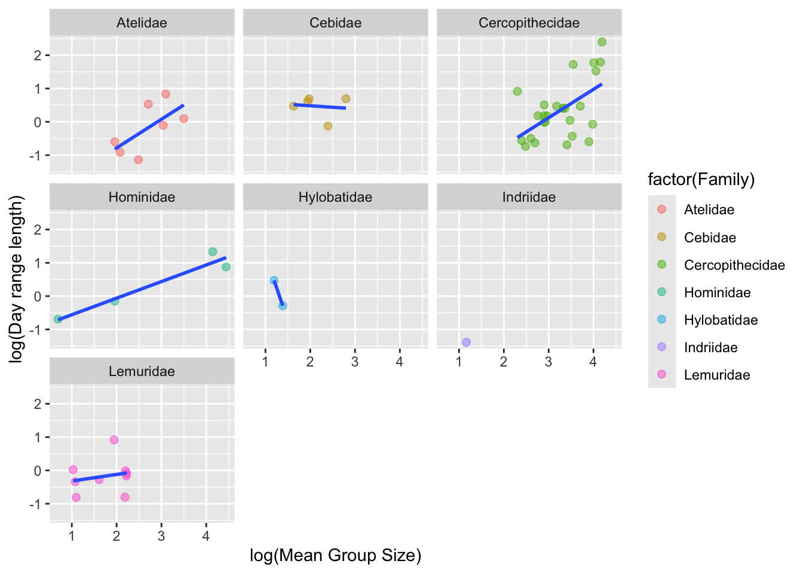
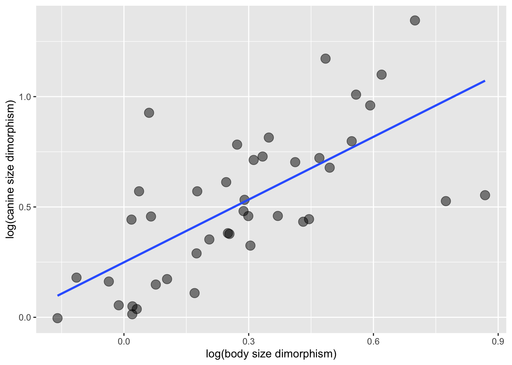
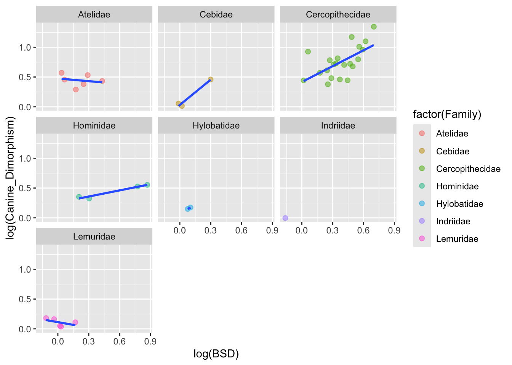
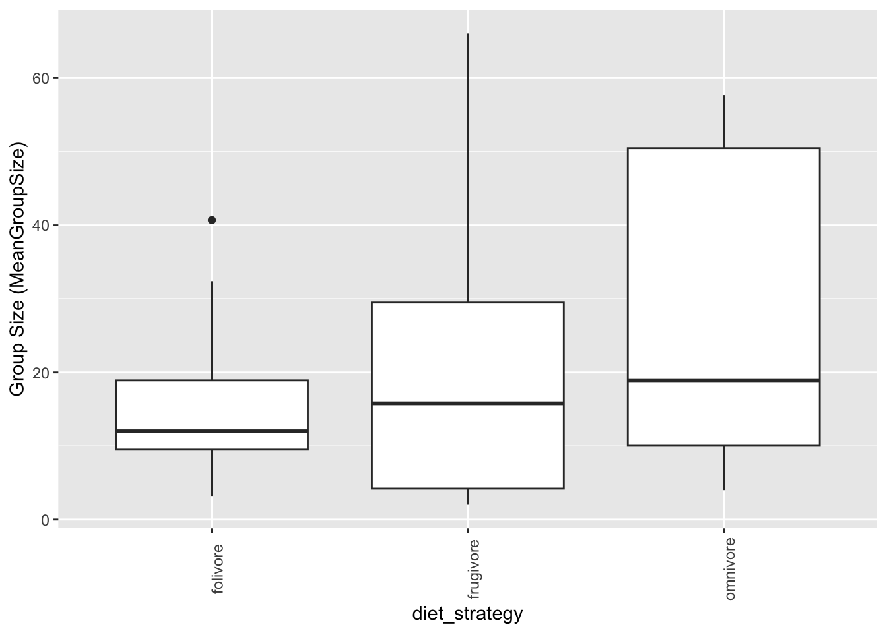

library(tidyverse)Exercise 03: Explore and Wrangle Data
Setup
We can use tidyverse library for data import and wrangling.
Loading the dataset and inspecting variables
From the provided URL we can first load the data set into the object called “d”.
f<- "https://raw.githubusercontent.com/difiore/ada-datasets/main/data-wrangling.csv"
d<- read_csv(f, col_names = TRUE)We can take a quick look at the data we loaded and variables in it.
head(d)# A tibble: 6 × 23
Scientific_Name Family Genus Species Brain_Size_Species_M…¹
<chr> <chr> <chr> <chr> <dbl>
1 Allenopithecus_nigroviridis Cercopitheci… Alle… nigrov… 58.0
2 Allocebus_trichotis Cercopitheci… Allo… tricho… NA
3 Alouatta_belzebul Atelidae Alou… belzeb… 52.8
4 Alouatta_caraya Atelidae Alou… caraya 52.6
5 Alouatta_guariba Atelidae Alou… guariba 51.7
6 Alouatta_palliata Atelidae Alou… pallia… 49.9
# ℹ abbreviated name: ¹Brain_Size_Species_Mean
# ℹ 18 more variables: Body_mass_male_mean <dbl>, Body_mass_female_mean <dbl>,
# MeanGroupSize <dbl>, AdultMales <dbl>, AdultFemale <dbl>,
# GR_MidRangeLat_dd <dbl>, Precip_Mean_mm <dbl>, Temp_Mean_degC <dbl>,
# HomeRange_km2 <dbl>, DayLength_km <dbl>, Fruit <dbl>, Leaves <chr>,
# Fauna <chr>, Canine_Dimorphism <dbl>, Feed <dbl>, Move <dbl>, Rest <dbl>,
# Social <dbl>tail(d)# A tibble: 6 × 23
Scientific_Name Family Genus Species Brain_Size_Species_M…¹
<chr> <chr> <chr> <chr> <dbl>
1 Trachypithecus_obscurus Cercopithecidae Trachy… obscur… 62.1
2 Trachypithecus_phayrei Cercopithecidae Trachy… phayrei 72.8
3 Trachypithecus_pileatus Cercopithecidae Trachy… pileat… 104.
4 Trachypithecus_vetulus Cercopithecidae Trachy… vetulus 61.3
5 Varecia_rubra Lemuridae Varecia rubra 31.1
6 Varecia_variegata Lemuridae Varecia varieg… 32.1
# ℹ abbreviated name: ¹Brain_Size_Species_Mean
# ℹ 18 more variables: Body_mass_male_mean <dbl>, Body_mass_female_mean <dbl>,
# MeanGroupSize <dbl>, AdultMales <dbl>, AdultFemale <dbl>,
# GR_MidRangeLat_dd <dbl>, Precip_Mean_mm <dbl>, Temp_Mean_degC <dbl>,
# HomeRange_km2 <dbl>, DayLength_km <dbl>, Fruit <dbl>, Leaves <chr>,
# Fauna <chr>, Canine_Dimorphism <dbl>, Feed <dbl>, Move <dbl>, Rest <dbl>,
# Social <dbl>dim(d)[1] 213 23str(d)spc_tbl_ [213 × 23] (S3: spec_tbl_df/tbl_df/tbl/data.frame)
$ Scientific_Name : chr [1:213] "Allenopithecus_nigroviridis" "Allocebus_trichotis" "Alouatta_belzebul" "Alouatta_caraya" ...
$ Family : chr [1:213] "Cercopithecidae" "Cercopithecidae" "Atelidae" "Atelidae" ...
$ Genus : chr [1:213] "Allenopithecus" "Allocebus" "Alouatta" "Alouatta" ...
$ Species : chr [1:213] "nigroviridis" "trichotis" "belzebul" "caraya" ...
$ Brain_Size_Species_Mean: num [1:213] 58 NA 52.8 52.6 51.7 ...
$ Body_mass_male_mean : num [1:213] 6130 92 7270 6525 5800 ...
$ Body_mass_female_mean : num [1:213] 3180 84 5520 4240 4550 5350 6430 5210 1230 NA ...
$ MeanGroupSize : num [1:213] NA 1 7 8 6.53 12 6.6 7.1 3.1 3 ...
$ AdultMales : num [1:213] NA 1 1 2.3 1.37 ...
$ AdultFemale : num [1:213] NA 1 1 3.3 2.2 ...
$ GR_MidRangeLat_dd : num [1:213] -0.17 -16.59 -6.8 -20.34 -21.13 ...
$ Precip_Mean_mm : num [1:213] 1574 1902 1644 1166 1332 ...
$ Temp_Mean_degC : num [1:213] 25.2 20.3 24.9 22.9 19.6 23.7 25.1 25.1 24.6 NA ...
$ HomeRange_km2 : num [1:213] NA NA NA NA 0.03 0.19 0.3 0.1 0.095 NA ...
$ DayLength_km : num [1:213] NA NA NA 0.4 NA 0.32 NA 0.55 NA NA ...
$ Fruit : num [1:213] NA NA 57.3 23.8 5.2 33.1 40.8 40 45 NA ...
$ Leaves : chr [1:213] NA NA "19.1" "67.7" ...
$ Fauna : chr [1:213] NA NA "0" "0" ...
$ Canine_Dimorphism : num [1:213] 2.21 NA 1.81 1.54 1.78 ...
$ Feed : num [1:213] NA NA 13.8 15.9 18.3 ...
$ Move : num [1:213] NA NA 18.8 17.6 14.3 ...
$ Rest : num [1:213] NA NA 57.3 61.6 64.4 ...
$ Social : num [1:213] NA NA 10 4.9 3 3.64 3.8 2.5 NA NA ...
- attr(*, "spec")=
.. cols(
.. Scientific_Name = col_character(),
.. Family = col_character(),
.. Genus = col_character(),
.. Species = col_character(),
.. Brain_Size_Species_Mean = col_double(),
.. Body_mass_male_mean = col_double(),
.. Body_mass_female_mean = col_double(),
.. MeanGroupSize = col_double(),
.. AdultMales = col_double(),
.. AdultFemale = col_double(),
.. GR_MidRangeLat_dd = col_double(),
.. Precip_Mean_mm = col_double(),
.. Temp_Mean_degC = col_double(),
.. HomeRange_km2 = col_double(),
.. DayLength_km = col_double(),
.. Fruit = col_double(),
.. Leaves = col_character(),
.. Fauna = col_character(),
.. Canine_Dimorphism = col_double(),
.. Feed = col_double(),
.. Move = col_double(),
.. Rest = col_double(),
.. Social = col_double()
.. )
- attr(*, "problems")=<externalptr> #Listing variable names
names(d) [1] "Scientific_Name" "Family"
[3] "Genus" "Species"
[5] "Brain_Size_Species_Mean" "Body_mass_male_mean"
[7] "Body_mass_female_mean" "MeanGroupSize"
[9] "AdultMales" "AdultFemale"
[11] "GR_MidRangeLat_dd" "Precip_Mean_mm"
[13] "Temp_Mean_degC" "HomeRange_km2"
[15] "DayLength_km" "Fruit"
[17] "Leaves" "Fauna"
[19] "Canine_Dimorphism" "Feed"
[21] "Move" "Rest"
[23] "Social" Step 1
Creating new variables
1) BSD (body size dimorphism) - Ratio of average male to female body mass.
2) sex_ratio - Ratio of the number of adult females to adult males in a typical group.
3) DI (for “defensibility index”) - Ratio of day range length to the diameter of the home range.
#BSD (body size dimorphism) - Ratio of average male to female body mass
d$BSD<-d$Body_mass_male_mean/d$Body_mass_female_mean
d$BSD [1] 1.9276730 1.0952381 1.3170290 1.5389151 1.2747253 1.3364486 1.7729393
[8] 1.2840691 0.9593496 NA 1.0512498 1.0179487 0.8413462 1.1190400
[15] 1.0143266 1.0196078 0.9252275 0.9705240 1.0672154 1.0520446 0.8462127
[22] 1.0910633 1.1908302 1.1191339 1.1979167 1.1660517 1.0902090 1.0582524
[29] 1.0669456 0.9202899 1.0578512 1.0662393 0.9166667 NA NA
[36] 0.9473684 0.9875776 NA 1.1029836 0.9016393 1.3886463 1.3590454
[43] 1.3485738 1.2262940 1.2527346 1.6784452 1.8269962 1.7218182 1.7741935
[50] 1.6372275 1.5607032 1.6666667 1.4895833 1.3333333 1.2413793 1.6339286
[57] 1.7304348 1.6401469 1.7215514 1.7796610 1.5657277 1.4735111 1.4689655
[64] NA 1.7576531 1.3623693 1.2099448 1.0071942 1.0472973 1.4478447
[71] 1.4182001 1.3307027 1.2787318 1.2887711 1.1927711 1.4016173 1.1662050
[78] 1.0522088 1.9076923 1.0477861 1.0093897 NA 1.1851852 0.9642995
[85] 0.9670782 0.8921576 1.0206186 0.9559471 1.0218579 1.0996169 0.9764151
[92] 1.0163043 1.0654255 1.0424077 1.0875912 1.6666667 2.3832168 NA
[99] 1.1164179 0.9816147 1.6538462 1.0103093 0.9577703 1.0795964 1.0528000
[106] 0.9371080 1.0110294 0.8523392 1.0370370 1.0000000 0.8714286 NA
[113] 1.0367893 0.8851571 0.9935760 1.0387205 NA NA 1.0037360
[120] 1.3128120 1.3611111 0.9814126 0.9948187 1.4523810 1.6376812 1.2145749
[127] 1.4168112 1.3661270 1.3690764 1.3958381 1.6978682 1.8080439 1.6153846
[134] 1.6371865 1.4590164 1.7750000 1.5096416 1.6000000 1.4000000 2.6875000
[141] 0.9375000 1.0333333 1.0238095 1.2435897 0.9967949 1.9930727 1.0223097
[148] 1.0122951 NA 1.0784314 1.0846645 1.2287234 1.0720721 1.0817439
[155] 1.3554217 1.2279106 1.7293233 1.8583333 1.7475728 2.0135135 0.9241848
[162] 0.9371429 1.0182704 1.0622711 NA NA 1.3171122 1.0869565
[169] 1.2278481 2.0531375 2.1689338 0.9955291 0.9981269 1.1190476 0.9848283
[176] 0.9440454 0.9742351 0.9277014 0.9442897 0.9832215 1.3033175 NA
[183] NA 1.5431034 0.9953488 1.0201715 0.9343189 0.9978947 0.9461967
[190] 0.9052453 1.1697026 1.0270270 0.9359694 NA 1.3600000 1.3191176
[197] 1.1515152 1.6000000 1.1092437 1.0406504 NA 1.1452991 1.6239316
[204] NA 1.1103025 1.1368421 1.0714286 1.0860484 1.0815650 1.0799824
[211] 1.4444444 1.0778443 1.0312500#sex_ratio - Ratio of the number of adult females to adult males in a typical group
d$sex_ratio<-d$AdultFemale/d$AdultMales
d$sex_ratio [1] NA 1.0000000 1.0000000 1.4347826 1.6058394 2.1724138
[7] 1.1298701 1.2941176 1.0000000 1.0000000 NA 1.0000000
[13] 1.0000000 1.0000000 1.0000000 NA 2.0588235 NA
[19] NA 0.5750000 1.0000000 1.0000000 1.0142857 NA
[25] 1.0000000 NA NA NA 1.0000000 1.0000000
[31] 1.0000000 2.0000000 NA 1.6666667 0.5000000 1.1785714
[37] 1.2608696 0.5000000 0.6666667 0.6666667 1.7105263 1.3611111
[43] 1.4705882 1.9714286 NA 3.7500000 4.7500000 NA
[49] 2.7777778 NA 8.5000000 4.0000000 3.0000000 7.0000000
[55] NA NA NA 8.8000000 1.9000000 1.0000000
[61] 5.0000000 4.8879310 5.0000000 NA NA NA
[67] 1.0000000 1.0000000 6.0000000 1.8780488 NA NA
[73] 2.0000000 1.9333333 1.0000000 2.6086957 NA 1.0000000
[79] 6.9333333 0.8571429 NA 0.8333333 0.9079903 1.1666667
[85] 0.9117647 1.0000000 1.0000000 0.6341463 0.9466667 NA
[91] NA 1.0000000 1.0000000 NA NA NA
[97] 2.4444444 NA 1.0000000 NA 1.0000000 1.0000000
[103] 1.1111111 1.0000000 NA NA 1.0000000 1.0000000
[109] 1.1232877 1.2307692 0.6250000 NA 0.8333333 1.0000000
[115] NA 1.0000000 NA 1.0000000 1.0000000 1.8139535
[121] NA NA 1.0000000 NA NA NA
[127] 2.2553191 5.1470588 NA 5.2888889 6.2083333 3.4827586
[133] NA 1.2125000 2.2903226 2.2962963 1.4893617 2.4444444
[139] NA NA 1.0000000 1.0000000 1.0000000 2.0000000
[145] 1.0000000 3.7000000 NA NA NA NA
[151] 1.0000000 1.0000000 NA NA 1.5571429 2.8965517
[157] 2.4305556 2.7714286 8.2000000 2.0746269 1.0000000 1.0000000
[163] 1.9148936 5.1730769 NA 5.9606299 2.8571429 NA
[169] 2.0000000 NA 1.0000000 1.1666667 6.0000000 1.6500000
[175] NA NA 1.2500000 0.9863014 NA 1.6470588
[181] 2.8461538 NA NA NA NA 0.6842105
[187] 0.8750000 1.0000000 NA NA 0.9090909 NA
[193] 0.6296296 0.6000000 NA 0.8900000 1.8372093 6.3888889
[199] 1.0000000 NA NA NA 2.7333333 6.1666667
[205] 15.6000000 3.1764706 2.3846154 2.8000000 NA 3.3809524
[211] 3.8000000 NA 0.5680000We need a calculation here, to get the diameter of the home range to be derived from HomeRange_km2 in order to get the new variable “DI (defensibility index)”
d$HomeRange_diameter <- 2 * sqrt(d$HomeRange_km2 / pi)
d$HomeRange_diameter [1] NA NA NA NA 0.19544100 0.49184908
[7] 0.61803872 0.35682482 0.34778982 NA NA NA
[13] 0.36563664 0.15957691 NA NA 1.70381518 NA
[19] 0.96408758 1.31590493 0.11283792 0.11283792 1.15072548 0.72515373
[25] 2.58544147 NA NA NA 0.29854107 0.24462677
[31] 0.60765078 0.63830765 NA 0.31915382 NA 0.35682482
[37] 0.15957691 NA 0.11283792 0.05046265 0.82147243 1.05851349
[43] 0.66755812 1.47122644 NA NA 0.80582391 NA
[49] NA NA 0.45135167 0.11283792 0.55279064 1.26156626
[55] NA NA NA 0.35682482 NA 0.27639532
[61] 1.21005185 NA 1.21005185 NA NA NA
[67] 0.15957691 0.15957691 1.69256875 NA NA NA
[73] 2.17341177 0.61803872 0.79788456 1.86097060 0.60765078 0.67325573
[79] 5.99635596 0.40684289 NA 0.94406974 0.39573787 0.45416385
[85] 0.25977239 0.23124892 0.50462650 0.86230615 0.29854107 NA
[91] NA 0.22567583 0.31915382 0.11283792 0.11283792 NA
[97] 2.26520537 0.51708829 0.11283792 NA 0.88848664 0.60765078
[103] 0.63830765 0.63830765 0.39088201 0.57536274 0.54115164 0.39088201
[109] 1.89487084 0.25231325 0.55279064 1.02800235 0.57536274 NA
[115] 0.10092530 0.05046265 NA 0.06180387 0.10092530 1.58777023
[121] 0.65795246 NA 0.09440697 NA NA NA
[127] 0.76530399 1.34934523 NA 2.74314522 1.49270533 NA
[133] NA 1.05851349 1.05851349 0.71364965 1.82992350 NA
[139] NA 5.79112507 0.11283792 NA 0.11283792 1.00925301
[145] 0.19544100 2.17926215 1.05248202 NA NA NA
[151] NA NA 0.27639532 0.39088201 5.96335312 3.71680630
[157] 2.47986834 4.36290399 4.70278331 3.40763036 0.37424103 0.15957691
[163] 0.73127328 0.64426399 0.70467256 0.37930999 0.90972837 NA
[169] 0.40370120 NA 2.22264919 0.69557963 0.39088201 0.84440165
[175] NA NA 0.51708829 2.25675833 0.27639532 0.19544100
[181] NA 3.56824823 5.64189584 5.56005901 NA 0.50462650
[187] 0.45135167 0.52925674 NA 0.25231325 0.51708829 NA
[193] 0.27639532 NA NA 0.35682482 0.93048530 1.28655020
[199] 0.63128756 0.22567583 0.07136496 0.24721549 1.21530156 0.19544100
[205] 0.39088201 1.68124709 0.31915382 0.64820448 1.10442903 0.73992770
[211] 0.15957691 NA 1.33033942#DI (for “defensibility index”) - Ratio of day range length to the diameter of the home range
d$DI <- d$DayLength_km/d$HomeRange_diameter
d$DI [1] NA NA NA NA NA 0.6506061
[7] NA 1.5413726 NA NA NA NA
[13] 1.9363486 4.1359367 NA NA 1.3499117 NA
[19] 1.7633253 1.8238400 4.0766439 NA 0.7821153 1.7375626
[25] 1.4504293 NA NA NA 1.8422926 2.8206234
[31] 1.3165457 3.1332853 NA NA NA 3.1387951
[37] 5.5145822 NA 8.8622693 5.7468246 2.1911873 1.9839143
[43] 2.9959938 1.5633216 NA NA 1.4891591 NA
[49] NA NA 3.3233510 NA NA 1.2682647
[55] NA NA NA 2.8024956 NA 1.5195626
[61] 1.2396163 NA 1.4462190 NA NA NA
[67] NA NA 1.4770449 NA NA NA
[73] 0.4522843 0.7766504 0.7143891 0.3261739 NA 4.3816931
[79] 0.5336574 2.4149371 NA 2.6481094 2.3045558 0.9842263
[85] NA 3.0789334 0.8798587 0.9828296 2.5390142 NA
[91] NA NA NA NA 15.5975939 NA
[97] 0.3796565 0.7735623 3.8107758 NA NA 2.1393867
[103] 2.3499640 2.5066283 3.5816435 1.5642306 2.4022841 0.6395792
[109] 0.5805145 3.5669946 NA NA 2.5027690 NA
[115] NA NA NA NA NA 0.7557769
[121] NA NA NA NA NA NA
[127] 1.9600055 0.6892232 NA 0.5832721 1.2058643 NA
[133] NA 1.6532619 1.5398954 NA 0.9093276 NA
[139] NA 0.5180341 NA NA NA 2.3779964
[145] NA 0.2982661 1.2351755 NA NA NA
[151] NA NA NA NA 0.4024581 1.0223831
[157] 1.8549372 1.3523103 2.3390404 1.6433707 NA NA
[163] 0.7521128 1.6204537 NA 1.4025468 0.7133998 NA
[169] 3.7156193 NA 0.2249568 0.7188250 2.2513188 1.4353359
[175] NA NA NA NA NA 4.3491385
[181] NA NA 0.2321915 NA NA 3.1706618
[187] NA 3.8922508 NA NA 3.5777255 NA
[193] 6.8742119 NA NA 9.5284851 1.9344744 0.3886362
[199] 1.1880481 7.9760423 NA 5.5821745 2.0571026 NA
[205] 0.8954109 NA NA 0.7405071 0.9054452 0.4392321
[211] NA NA 0.7674733Since a division is included we must make sure that the rows where the relavant denominator is zero the new variable is INF. To check this,
which(is.infinite(d$BSD)) # Checking whether denominator zeros have given any INFinteger(0)which(is.infinite(d$sex_ratio))integer(0)which(is.infinite(d$DI))integer(0)There is no any instances as INF. So there are no divisions by zero and the numerator N/A values will produce a N/A value for new variable as well naturally.
4) Plotting the relationship between day range length and time spent moving
First trying out ggplot2 to visualize this relationship.
The reason for choosing ggplot2 for this plot is we can use faceting by family to generate one plot per family. So our comparison between families would be easy.Using a scatterplot because both are continuous variables,
Explaining the layers and parameters used :
1) Aesthetics layer - Mapping given variables to X (Time spent moving) and Y (Day range length) axis,
2) Geometry layers - To customize the plot, defining alpha= 0.5 (opacity of the points), color=black, size=4 , na.rm =TRUE to drop rows with missing values for the plotted variables. Opasity is set at 0.5 to see overlapping points.
3) geom_smooth() to show where the trend of all points are lying generally.
3) Using labs() to set the X- and Y-axis labels.
library(ggplot2)
# Overall plot (representing all species)
p<-ggplot(d, aes(x = Move, y = DayLength_km))
p<-p+ geom_point(alpha=0.5,color="black",size=4, na.rm = TRUE)
p<-p+ geom_smooth(method = "lm", se = FALSE, na.em=TRUE)
p<-p+labs(x="Time spent moving", y="Day range length")
p
Should we transform values?
The above plotted values seems to be skewed to a certain direction of the plot. Therefore, we can use log values of the variables for the plot. If we convert the values to log values, the minus(-) values for day range length variable will indicate the values between 0 and 1.
# Overall plot (representing all species) - Now using log() values
d<-d[ is.finite(log(d$Move)) & is.finite(log(d$DayLength_km)), ] # Removing invalid values after log convrersion
p<-ggplot(d, aes(x = log(Move), y = log(DayLength_km)))
p<-p+ geom_point(alpha=0.5,color="black",size=4, na.rm = TRUE)
p<-p+ geom_smooth(method = lm, se = FALSE,na.em=TRUE)
p<-p+labs(x="log(Time spent moving)", y="log(Day range length)")
p
By family comparison
1) Approach 1: First using the aesthetic mapping inside geom_point() to show different families.Defining it inside the geometry layer does not affect other layers.
# Plotting all species in one plot with dfferent color for each
d<-d[ is.finite(log(d$Move)) & is.finite(log(d$DayLength_km)), ] # Removing invalid values after log convrersion
p<-ggplot(d, aes(x = log(Move), y = log(DayLength_km)))
p<-p+ geom_point(alpha=0.5,aes(color=Family),size=4, na.rm = TRUE)
p<-p+ geom_smooth(method = lm, se = FALSE,na.em=TRUE)
p<-p+labs(x="log(Time spent moving)", y="log(Day range length)")
p
2) Approach 2- Now, we are using facet_wrap() layer in ggplot2 to visualize families in a separate plot
# Using a separate plot t represent one family
d<-d[ is.finite(log(d$Move)) & is.finite(log(d$DayLength_km)), ] # Removing invalid values after log convrersion
p<-ggplot(d, aes(x = log(Move), y = log(DayLength_km)))
p<-p+ geom_point(alpha=0.5,aes(color=factor(Family)),size=2, na.rm = TRUE)
p<-p+ geom_smooth(method = lm, se = FALSE,na.em=TRUE)
p<-p+ facet_wrap(~ Family)
p<-p+labs(x="log(Time spent moving)", y="log(Day range length)")
p
This approach is good for identifying patterns separate for each family.
Do species that spend more time moving travel farther overall? How about within any particular primate family?
Looking at above plots, we can say that the relationship between x and y variables are not very strong. But, considering overall the slope of the line upwards tell us that species spend more time moving likely to have longer day range lengths.
Above overall conclusion varies slightly if we consider families separately. Atelidae family show a considerable good positive relationship, from which we can tell that the species spend more time moving generally travel farther within a day.
Cebidae and Hylobatidae also show a positive trend, but we cannot say exactly it is a positive relationship because they have very small sample sizes. similar observation with Indriidae.
Cercopithecidae and and Lemuridae shows a flat relationship while only Hominidae shows a negative relationship which tells us that the time they spent moving is less allocated to move farther away or the time they spent moving is not necessarily for travelling farther away respectively.
5) Plotting the relationship between day range length and group size
Applying same considerations applied for above plot. We can transform these variables into log values to avoid the skewness of data points in the plot and to get a clear wide spread visualization.
# Overall plot (all species)
d<-d[ is.finite(log(d$MeanGroupSize)) & is.finite(log(d$DayLength_km)), ] # Removing invalid values after log convrersion
p<-ggplot(d, aes(x = log(MeanGroupSize), y = log(DayLength_km)))
p<-p+ geom_point(alpha=0.5,color="black",size=4, na.rm = TRUE)
p<-p+ geom_smooth(method = lm, se = FALSE,na.em=TRUE)
p<-p+labs(x="log(Mean Group Size)", y="log(Day range length)")
p
# Using a separate plot t represent one family
d<-d[ is.finite(log(d$MeanGroupSize)) & is.finite(log(d$DayLength_km)), ] # Removing invalid values after log convrersion
p<-ggplot(d, aes(x = log(MeanGroupSize), y = log(DayLength_km)))
p<-p+ geom_point(alpha=0.5,aes(color=factor(Family)),size=2, na.rm = TRUE)
p<-p+ geom_smooth(method = lm, se = FALSE,na.em=TRUE)
p<-p+ facet_wrap(~ Family)
p<-p+labs(x="log(Mean Group Size)", y="log(Day range length)")
p
unique(d$Family)[1] "Atelidae" "Cebidae" "Cercopithecidae" "Lemuridae"
[5] "Hominidae" "Hylobatidae" "Indriidae" unique(d$Species) [1] "caraya" "palliata" "seniculus" "belzebuth" "geoffroyi"
[6] "arachnoides" "goeldii" "jacchus" "capucinus" "galeritus"
[11] "ascanius" "diana" "mitis" "aethiops" "angolensis"
[16] "guereza" "polykomos" "satanas" "albifrons" "collaris"
[21] "coronatus" "fulvus" "mongoz" "rubriventer" "rufus"
[26] "sanfordi" "gorilla" "lar" "indri" "lagotricha"
[31] "albigena" "fascicularis" "fuscata" "mulatta" "nigra"
[36] "sylvanus" "paniscus" "troglodytes" "anubis" "cynocephalus"
[41] "hamadryas" "ursinus" "badius" "kirkii" "rufomitratus"
[46] "tephrosceles" "pygmaeus" "fuscicollis" "mystax" "entellus"
[51] "syndactylus" "gelada" "variegata" Do species that live in larger groups travel farther, overall, in a day? How about within any particular primate family?
Overall there is a positive relationship between group size and day range length. This tells us that who is living in larger groups tend to travel farther per day.
When looking at the relationship within individual primate families, the pattern is not so consistant.
Cercopithecidae show a clear positive relationship telling us that species with larger group sizes tend to have longer day ranges even within the family.
Atelidae and Hominidae also shows a positive trend, but these have very few data points. Therefore, hard to exactly predict this.
Lemuridae show a weak and nearly flat relationship, indicating little change in day range length with increasing group size.
Hylobatidae and Indriidae again have very limited data points, making it difficult to infer any reliable within-family relationship.
6) Plotting the relationship between canine size dimorphism (y axis) and body size dimorphism (x axis)
# Overall plot (all species)
d<-d[ is.finite(log(d$BSD)) & is.finite(log(d$Canine_Dimorphism)), ] # Removing invalid values after log convrersion
p<-ggplot(d, aes(x = log(BSD), y = log(Canine_Dimorphism)))
p<-p+ geom_point(alpha=0.5,color="black",size=4, na.rm = TRUE)
p<-p+ geom_smooth(method = lm, se = FALSE,na.em=TRUE)
p<-p+labs(x="log(body size dimorphism)", y="log(canine size dimorphism)")
p
# Using a separate plot t represent one family
d<-d[ is.finite(log(d$ BSD)) & is.finite(log(d$Canine_Dimorphism)), ] # Removing invalid values after log convrersion
p<-ggplot(d, aes(x = log(BSD), y = log(Canine_Dimorphism)))
p<-p+ geom_point(alpha=0.5,aes(color=factor(Family)),size=2, na.rm = TRUE)
p<-p+ geom_smooth(method = lm, se = FALSE,na.em=TRUE)
p<-p+ facet_wrap(~ Family)
p<-p+labs(x="log(BSD)", y="log(Canine_Dimorphism)")
p
unique(d$Family)[1] "Atelidae" "Cebidae" "Cercopithecidae" "Lemuridae"
[5] "Hominidae" "Hylobatidae" "Indriidae" unique(d$Species) [1] "caraya" "palliata" "seniculus" "geoffroyi" "arachnoides"
[6] "jacchus" "capucinus" "ascanius" "diana" "mitis"
[11] "aethiops" "angolensis" "guereza" "polykomos" "coronatus"
[16] "fulvus" "mongoz" "rubriventer" "gorilla" "lar"
[21] "indri" "lagotricha" "albigena" "fascicularis" "fuscata"
[26] "mulatta" "nigra" "sylvanus" "paniscus" "troglodytes"
[31] "anubis" "cynocephalus" "hamadryas" "ursinus" "badius"
[36] "kirkii" "pygmaeus" "fuscicollis" "entellus" "syndactylus"
[41] "gelada" "variegata" Do taxa with greater size dimorphism also show greater canine dimorphism?
Overall, we can see a positive relationship between body size dimorphism and canine dimorphism because the trending line’s slope is upward.
if we consider species within primate families, Cercopithecidae show a clear positive trend which tells us that species with higher body size dimorphism also tend to have higher canine dimorphism.
Hominidae show a weak positive trend, also Atelidae and Lemuridae show little to no clear relationship within the family.
One common limitations to above data visualizations is there are limited data points for some families which makes it harder to interpret a relationship between two variables accurately.
7) Creating a new variable named diet_strategy
( “frugivore” if fruits make up >50% of the diet, “folivore” if leaves make up >50% of the diet, and “omnivore” if diet data are available but neither of these is true (i.e., these values are not NA))
# Creating a new variable named "diet_strategy"
# Using mutate function to add the new column
d1<-mutate(d, diet_strategy = ifelse(Fruit >= 50, "frugivore", ifelse(Leaves >= 50, "folivore",
ifelse(Fruit < 50 & Leaves < 50 & !is.na(Fruit) & !is.na(Leaves), "omnivore", NA))))
# viewing the created column
d1$diet_strategy [1] "folivore" "folivore" "omnivore" "frugivore" "folivore" "omnivore"
[7] "folivore" "frugivore" "frugivore" "frugivore" "omnivore" "folivore"
[13] "folivore" "folivore" "frugivore" "frugivore" "frugivore" "frugivore"
[19] "folivore" "frugivore" "folivore" "frugivore" "frugivore" "frugivore"
[25] "omnivore" "folivore" NA "omnivore" NA "frugivore"
[31] "omnivore" "frugivore" "frugivore" NA "omnivore" "folivore"
[37] "frugivore" "frugivore" "frugivore" "omnivore" "folivore" "frugivore"# we need to remove the rows from the dataset where the diet_strategy is N/A for this
# Using subsetting
d2 <- d1[!is.na(d1$diet_strategy), ]
d2# A tibble: 39 × 28
Scientific_Name Family Genus Species Brain_Size_Species_M…¹
<chr> <chr> <chr> <chr> <dbl>
1 Alouatta_caraya Atelidae Aloua… caraya 52.6
2 Alouatta_palliata Atelidae Aloua… pallia… 49.9
3 Alouatta_seniculus Atelidae Aloua… senicu… 55.2
4 Ateles_geoffroyi Atelidae Ateles geoffr… 105.
5 Brachyteles_arachnoides Atelidae Brach… arachn… 117.
6 Callithrix_jacchus Cebidae Calli… jacchus 7.24
7 Cebus_capucinus Cebidae Cebus capuci… 72.9
8 Cercopithecus_ascanius Cercopithecidae Cerco… ascani… 59.6
9 Cercopithecus_diana Cercopithecidae Cerco… diana 62.6
10 Cercopithecus_mitis Cercopithecidae Cerco… mitis 71.3
# ℹ 29 more rows
# ℹ abbreviated name: ¹Brain_Size_Species_Mean
# ℹ 23 more variables: Body_mass_male_mean <dbl>, Body_mass_female_mean <dbl>,
# MeanGroupSize <dbl>, AdultMales <dbl>, AdultFemale <dbl>,
# GR_MidRangeLat_dd <dbl>, Precip_Mean_mm <dbl>, Temp_Mean_degC <dbl>,
# HomeRange_km2 <dbl>, DayLength_km <dbl>, Fruit <dbl>, Leaves <chr>,
# Fauna <chr>, Canine_Dimorphism <dbl>, Feed <dbl>, Move <dbl>, Rest <dbl>, …Creating boxplots of group size for species with different dietary strategies, omitting the category NA
# Creating boxplots of group size for species with different dietary strategies
# diet_strategy should be the x axis.
p<- ggplot(data = d2, aes(x = diet_strategy, y = MeanGroupSize))
p<- p+ geom_boxplot(na.rm = TRUE)
p<-p+ theme(axis.text.x = element_text(angle = 90))
p<-p+ labs(x= "diet_strategy", y="Group Size (MeanGroupSize)")
p
Do frugivores live in larger groups than folivores?
Looking at the median lines of the boxplots of two categories, folivores have a slightly higher median line. This tells us that on average, folivore species live in somewhat larger groups than frugivores. But, the plot also tells us that frugivores have some very large group sized species as well because of the strong upper outliers. The largest group size of folivores are not that high as frugivores. We can also tell that the variability of group sizes in frugivores us higher then folivores too looking at the boxes.
Question 8
1) using mutate() to add a variable, Binomial to the data frame d, which is a concatenation of the Genus and Species variables
2) Using select() to trim the data frame to only include the variables Binomial, Family, Brain_size_species_mean, and Body_mass_male_mean
3) Using group_by() to group above variables by Family
4) Using summarise() to calculate the average value for Brain_Size_Species_Mean and Body_mass_male_mean per Family
5) using arrange() to arrange by increasing average brain size
d1<-d %>%
mutate(Binomial = paste(Genus, Species)) %>%
select(Binomial, Family, Brain_Size_Species_Mean, Body_mass_male_mean) %>%
group_by(Family) %>%
summarise(
mean_brain = mean(Brain_Size_Species_Mean, na.rm = TRUE),
mean_body = mean(Body_mass_male_mean, na.rm = TRUE)
) %>%
arrange(mean_brain)
d1# A tibble: 7 × 3
Family mean_brain mean_body
<chr> <dbl> <dbl>
1 Lemuridae 25.0 2057.
2 Cebidae 29.4 1336.
3 Indriidae 34.8 5830
4 Atelidae 79.3 7506.
5 Cercopithecidae 97.3 11979.
6 Hylobatidae 113. 8845.
7 Hominidae 394. 86276.